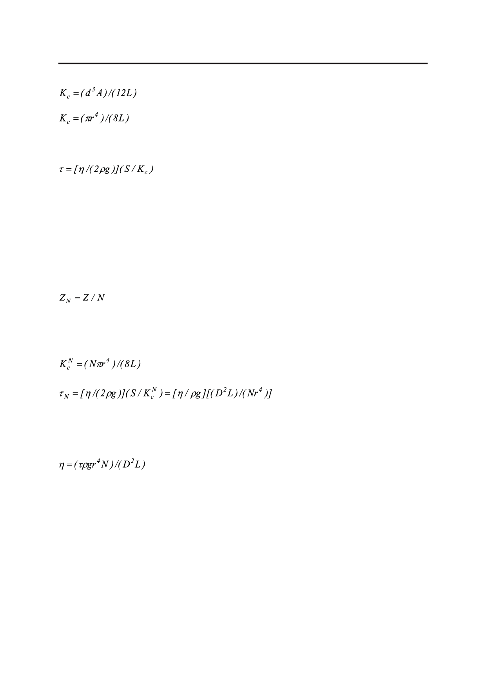

С.В. Пасечник, Д.В. Шмелева, А.В. Торчинская, О.А. Семина, А.А. Дюкин
(6)
.
(7)
В результате получаем общее уравнение для времени затухания [3]:
,
(8)
где ρ−плотность жидкости.
Выражение (8) справедливо и для исследуемого в данной работе затухающего потока
жидкости через образец пористой пленки. Действительно, такой образец можно рассма-
тривать как число N идентичных каналов с круглым поперечным сечением, соединенных
параллельно. В этом случае эквивалентное гидродинамическое сопротивление ZN связа-
но с гидродинамическим сопротивлением Z каждого канала следующим тривиальным
выражением:
,
(9)
что позволяет получить простое обобщение представленных выше соотношений.
В частности, соответствующие выражения для KcN и τN можно записать в виде:
(10)
.
(11)
Таким образом, по определенным экспериментально значениям времени затухания τN
коэффициент сдвиговой вязкости η рассчитывается, согласно выражению:
.
(12)
Полученные соотношения (1−6) ранее использовались для исследования реологиче-
ских свойств нематических жидких кристаллов в плоском сдвиговом потоке [7−10]. В
частности, три вязкости Мезовича определяли путем исследования затухающего потока
НЖК в плоских каналах с различной ориентацией. Однородная ориентация молекул, не-
обходимая для различных геометрий эксперимента, обеспечивалась за счет соответству-
ющей поверхностной обработки каналов [7, 9] или путем комбинированного воздействия
поверхностей и сильных электрических полей [10]. При малых значениях градиента дав-
ления, использованных в экспериментах, сдвиговый поток был достаточно слабым и не
нарушал первоначальную ориентацию НЖК. Таким образом, имело место ньютоновское
поведение жидких кристаллов с постоянным значением эффективной сдвиговой вязко-
сти ηeff.
Российский технологический журнал 2017 Том 5 № 5
29